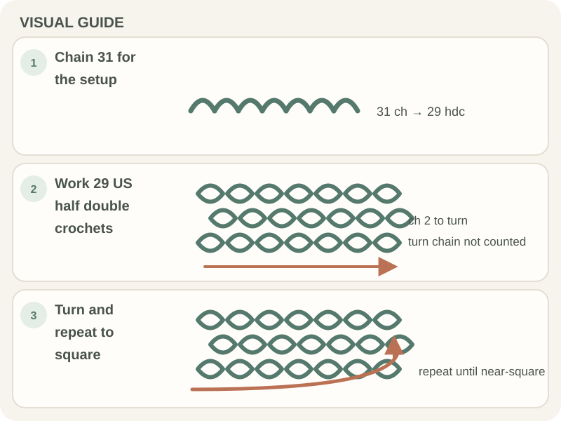

Beginner Projects · Beginner guide
How to Crochet a Basic Washcloth
A basic washcloth is a flat, absorbent rectangle; match the fiber and washing method to how you plan to use it.

This beginner outline focuses on even rows and finishing. It is not a fixed-size pattern because gauge and yarn change the dimensions.
Before you begin
Choose washable yarn based on the intended use and follow the label’s care directions. Make a small swatch if you need a particular size or texture.
Step-by-step instructions
This sample uses US half double crochet for a slightly taller fabric. The turning chain is not counted as a stitch in these instructions.
- Choose washable yarn and a hook suited to its label; chain 31.

Real crochet photograph by Ksenia Chernaya via Pexels. - Row 1: half double crochet in the third chain from the hook and in each remaining chain (29 stitches).
- Chain 2 and turn. Half double crochet in the first stitch and across; the turning chain does not count.
- Repeat Row 2 until the fabric is close to square, then fasten off and weave in the ends.

How to check your work
Check that the rectangle lies flat and the row count is consistent. Wash a swatch first if shrinkage, color bleed, or texture change would matter.
Common beginner problems
- The piece narrows: You may be missing the first or last stitch. Mark the edges and compare row counts.
- The corners ruffle: Check for accidental increases or extra turning-chain stitches.
- The fabric feels scratchy or stiff: Try a different yarn or stitch in a swatch before making the full cloth.
Choosing the fabric
A denser fabric can suit some uses, while an open stitch may be less practical. Choose based on the intended job and care instructions, then test a swatch instead of relying on yarn labels alone.
Frequently asked questions
Is a washcloth different from a dishcloth?
Names vary by pattern and use. Choose fiber and texture for the job you have in mind.
How do I make a square cloth?
Measure both directions and stop when they are close; a swatch helps estimate row count.
How should I wash it?
Follow the fiber label and any pattern care notes.